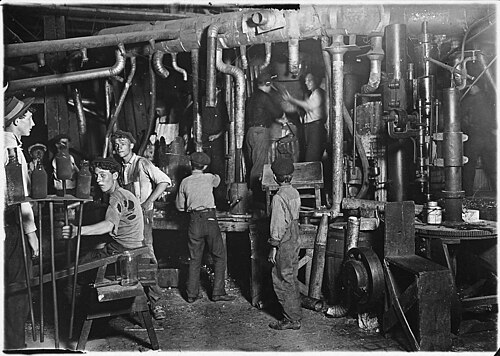
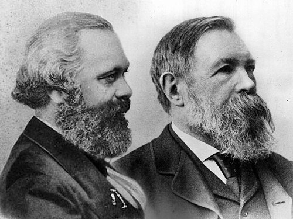

Los hechos que dieron lugar a esta conmemoración están contextualizados en los albores de la Revolución Industrial en los Estados Unidos. A fines del siglo XIX Chicago era la segunda ciudad en número de habitantes de Estados Unidos. Del oeste y del sudeste llegaban cada año por ferrocarril miles de ganaderos desocupados, creando las primeras villas humildes que albergaban a cientos de miles de trabajadores. Además, estos centros urbanos acogieron a inmigrantes de todo el mundo a lo largo del siglo XIX.
El sábado 1 de mayo de 1886,[5] doscientos mil trabajadores iniciaron la huelga mientras que otros doscientos mil obtenían esa conquista con la simple amenaza de paro.
en la década de 1880, intelectuales clave en establecer las bases del socialismo científico y el marxismo, pilares fundamentales de una parte significativa del movimiento obrero.
